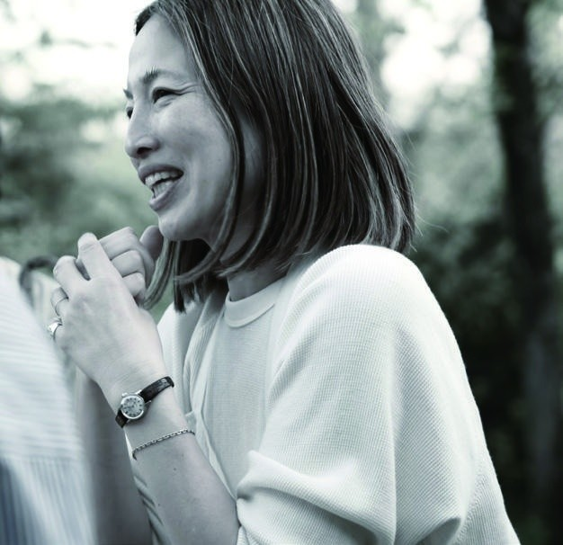

プロフィール
Yumico Otsubo


大坪祐三子の実践は、つくることから始まりました。1995年に日本からスペインへ渡り、彫金、ジュエリーデザイン、宝石学を学び、その後ドイツと日本でも学びを深めました。作家としての活動から教育へ、そしてファッション、アート、ブランド、場、地域へと実践を重ねています。
2023年にC’s CREATIVEを設立し、我孫子にcreative space NHUMAを開設。現在はブランディング、地域資源、教育を横断しながら、人がつくり、参加する機会を育んでいます。日本語・英語・スペイン語で活動しています。
C’s CREATIVE / creative space NHUMA
MBA · JP / EN / ES